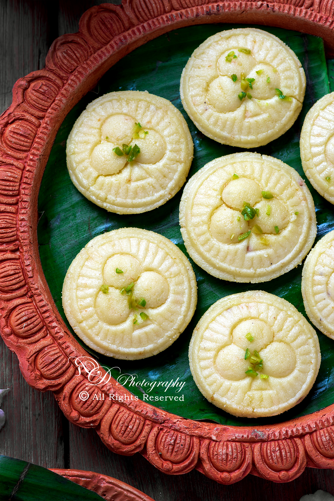
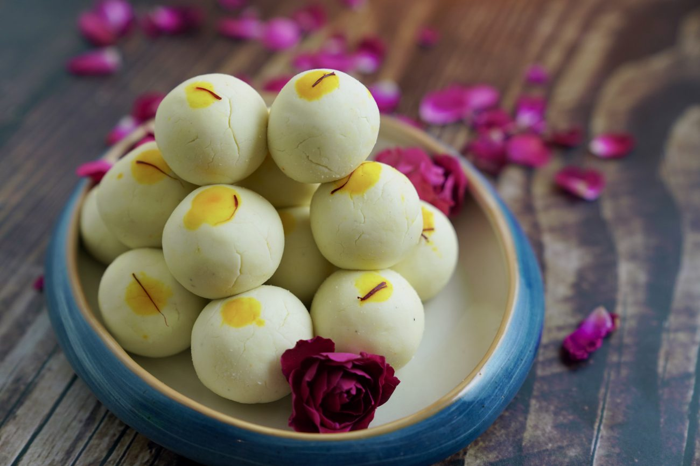
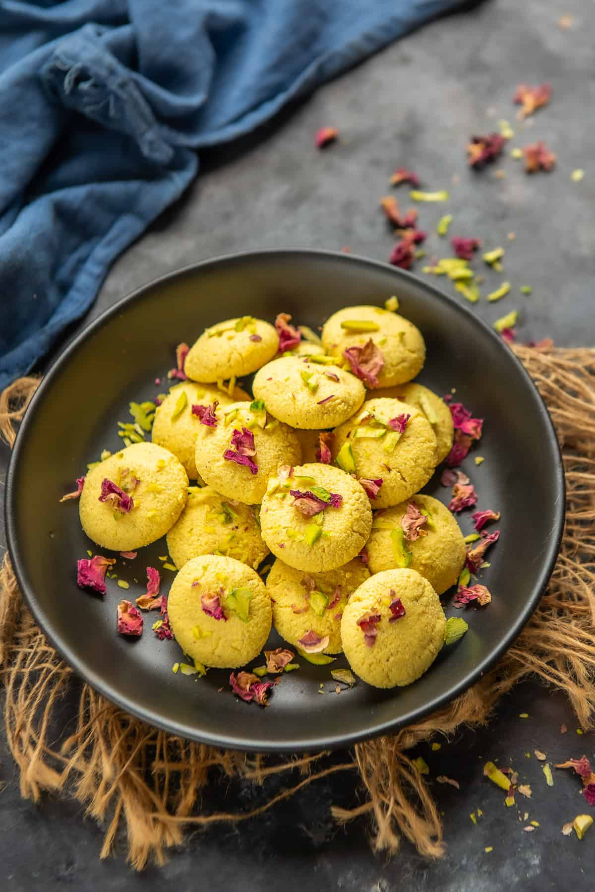
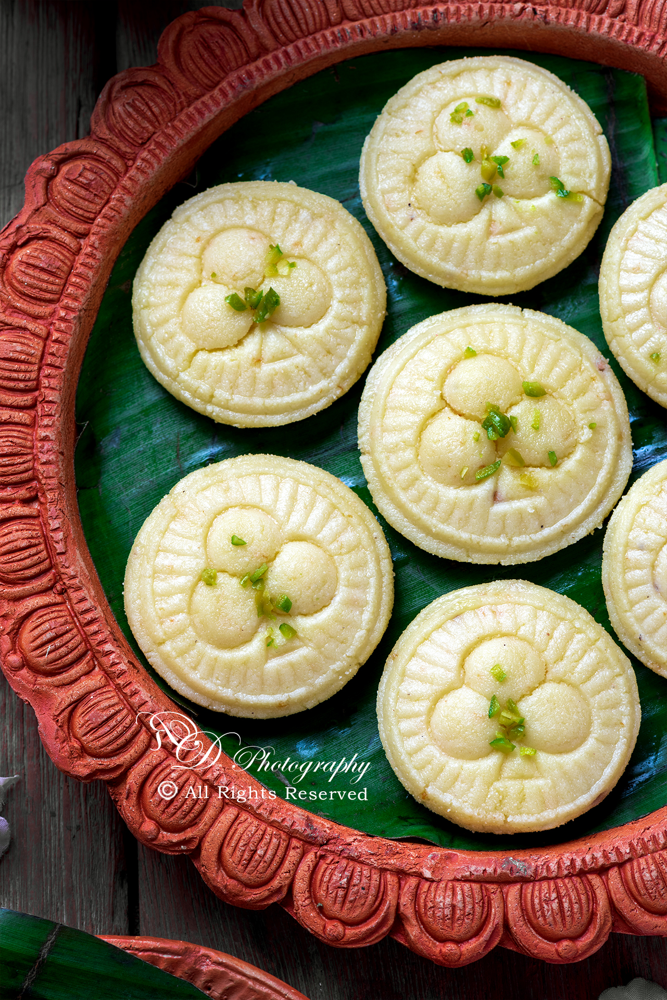
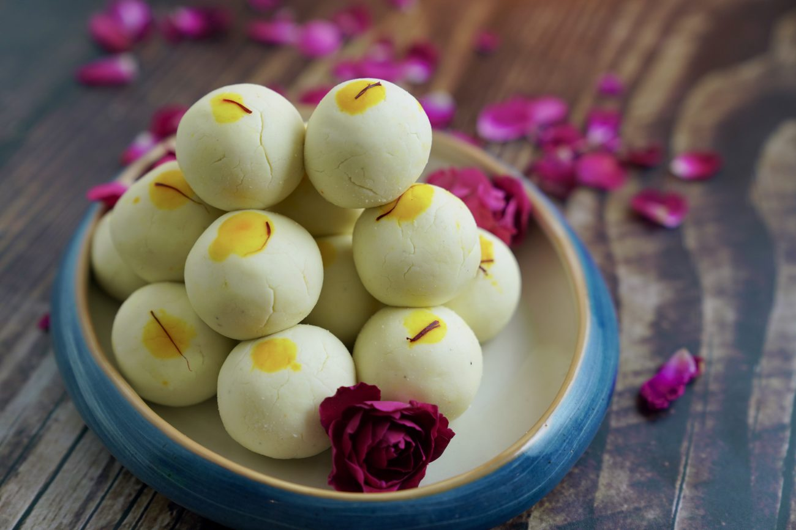
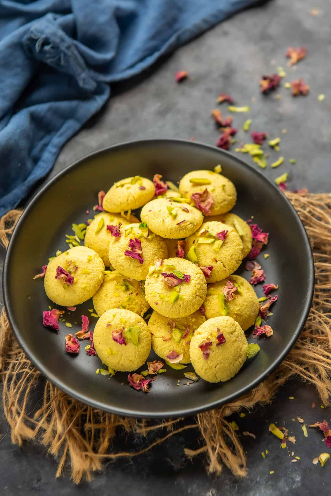

Probably one of the simplest Indian desserts, aka mishti, out there, sandesh is made of only three ingredients! All you need is milk, lemon juice and sugar to make these Bengali sweets. Pistachios are optional, but definitely recommended, for a pretty presentation and a little bite. Sandesh are the perfect addition to any holiday (especially on a Diwali sweets platter!) or celebratory food platter.
In West Bengal it is called ‘sondesh’ or ‘shondesh’ and elsewhere it is called sandesh sweet. It is a dry yet semi-moist dessert that actually will melt in your mouth. This is chenna based sweet recipe just like other Bengali desserts rasgulla, rasmalai, chum chum.